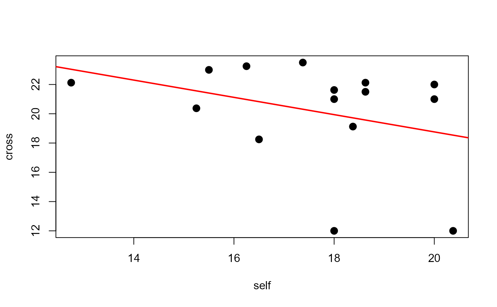
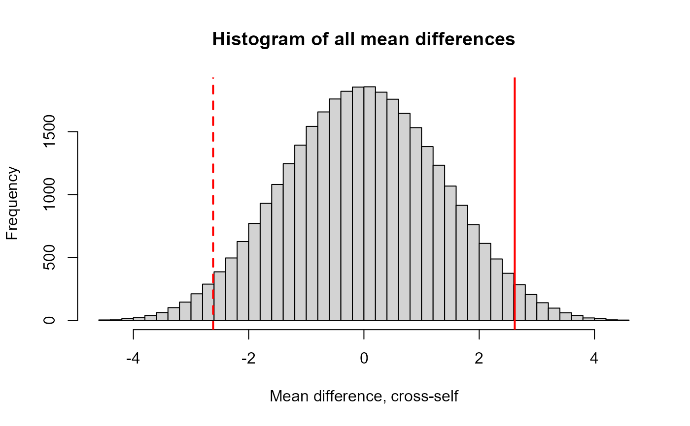
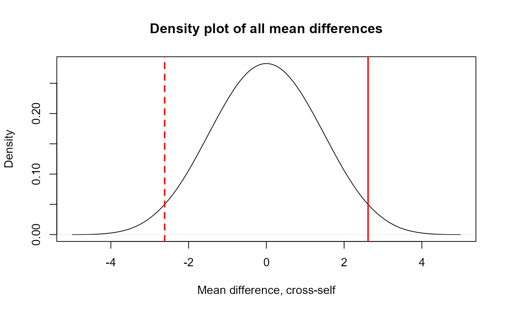

Darwin (1876) studied the growth of pairs of zea may (aka corn) seedlings, one produced by cross-fertilization and the other produced by self-fertilization, but otherwise grown under identical conditions. His goal was to demonstrate the greater vigour of the cross-fertilized plants. The data recorded are the final height (inches, to the nearest 1/8th) of the plants in each pair.
In the Design of Experiments, Fisher (1935) used these data to
illustrate a paired t-test (well, a one-sample test on the mean difference,
cross - self). Later in the book (section 21), he used this data to
illustrate an early example of a non-parametric permutation test, treating
each paired difference as having (randomly) either a positive or negative
sign.
Format
A data frame with 15 observations on the following 4 variables.
pairpair number, a numeric vector
potpot, a factor with levels
1234crossheight of cross fertilized plant, a numeric vector
selfheight of self fertilized plant, a numeric vector
diffcross - selffor each pair
Source
Darwin, C. (1876). The Effect of Cross- and Self-fertilization in the Vegetable Kingdom, 2nd Ed. London: John Murray.
Andrews, D. and Herzberg, A. (1985) Data: a collection of problems
from many fields for the student and research worker. New York: Springer.
Data retrieved from: https://www.stat.cmu.edu/StatDat/
Details
In addition to the standard paired t-test, several types of non-parametric tests can be contemplated:
(a) Permutation test, where the values of, say self are permuted and
diff=cross - self is calculated for each permutation. There are 15!
permutations, but a reasonably large number of random permutations would
suffice. But this doesn't take the paired samples into account.
(b) Permutation test based on assigning each abs(diff) a + or - sign,
and calculating the mean(diff). There are \(2^{15}\) such possible values.
This is essentially what Fisher proposed. The p-value for the test is the
proportion of absolute mean differences under such randomization which
exceed the observed mean difference.
(c) Wilcoxon signed rank test: tests the hypothesis that the median signed
rank of the diff is zero, or that the distribution of diff is
symmetric about 0, vs. a location shifted alternative.
See also
independence_test in the coin package, a general
framework for conditional inference procedures (permutation tests)
Examples
data(ZeaMays)
##################################
## Some preliminary exploration ##
##################################
boxplot(ZeaMays[,c("cross", "self")], ylab="Height (in)", xlab="Fertilization")
# examine large individual diff/ces
largediff <- subset(ZeaMays, abs(diff) > 2*sd(abs(diff)))
with(largediff, segments(1, cross, 2, self, col="red"))
# plot cross vs. self. NB: unusual trend and some unusual points
with(ZeaMays, plot(self, cross, pch=16, cex=1.5))
abline(lm(cross ~ self, data=ZeaMays), col="red", lwd=2)

# pot effects ?
anova(lm(diff ~ pot, data=ZeaMays))
#> Analysis of Variance Table
#>
#> Response: diff
#> Df Sum Sq Mean Sq F value Pr(>F)
#> pot 3 44.692 14.898 0.6139 0.6201
#> Residuals 11 266.947 24.268
##############################
## Tests of mean difference ##
##############################
# Wilcoxon signed rank test
# signed ranks:
with(ZeaMays, sign(diff) * rank(abs(diff)))
#> [1] 11 -14 2 4 1 5 7 9 3 8 12 6 15 13 -10
wilcox.test(ZeaMays$cross, ZeaMays$self, conf.int=TRUE, exact=FALSE)
#>
#> Wilcoxon rank sum test with continuity correction
#>
#> data: ZeaMays$cross and ZeaMays$self
#> W = 185.5, p-value = 0.002608
#> alternative hypothesis: true location shift is not equal to 0
#> 95 percent confidence interval:
#> 1.625009 4.875007
#> sample estimates:
#> difference in location
#> 3.374989
#>
# t-tests
with(ZeaMays, t.test(cross, self))
#>
#> Welch Two Sample t-test
#>
#> data: cross and self
#> t = 2.4371, df = 22.164, p-value = 0.02328
#> alternative hypothesis: true difference in means is not equal to 0
#> 95 percent confidence interval:
#> 0.3909566 4.8423767
#> sample estimates:
#> mean of x mean of y
#> 20.19167 17.57500
#>
with(ZeaMays, t.test(diff))
#>
#> One Sample t-test
#>
#> data: diff
#> t = 2.148, df = 14, p-value = 0.0497
#> alternative hypothesis: true mean is not equal to 0
#> 95 percent confidence interval:
#> 0.003899165 5.229434169
#> sample estimates:
#> mean of x
#> 2.616667
#>
mean(ZeaMays$diff)
#> [1] 2.616667
# complete permutation distribution of diff, for all 2^15 ways of assigning
# one value to cross and the other to self (thx: Bert Gunter)
N <- nrow(ZeaMays)
allmeans <- as.matrix(expand.grid(as.data.frame(
matrix(rep(c(-1,1),N), nr =2)))) %*% abs(ZeaMays$diff) / N
# upper-tail p-value
sum(allmeans > mean(ZeaMays$diff)) / 2^N
#> [1] 0.02548218
# two-tailed p-value
sum(abs(allmeans) > mean(ZeaMays$diff)) / 2^N
#> [1] 0.05096436
hist(allmeans, breaks=64, xlab="Mean difference, cross-self",
main="Histogram of all mean differences")
abline(v=c(1, -1)*mean(ZeaMays$diff), col="red", lwd=2, lty=1:2)

plot(density(allmeans), xlab="Mean difference, cross-self",
main="Density plot of all mean differences")
abline(v=c(1, -1)*mean(ZeaMays$diff), col="red", lwd=2, lty=1:2)
